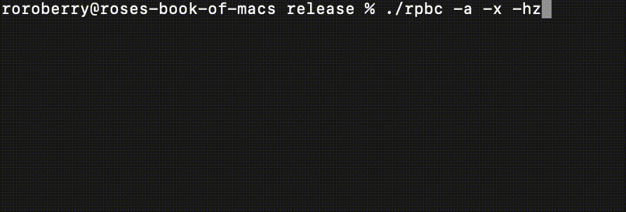
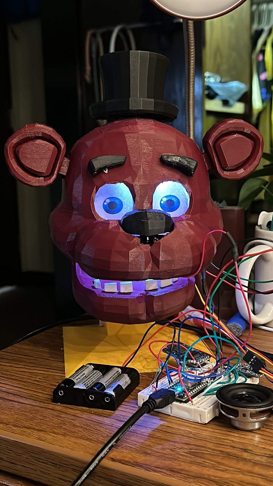

These are a more detailed sample of some of my projects that I have developed over the years.
If you're curious about the most up-to-date status of these projects, feel free to visit my GitHub
page at the footer.
Each project will also include a link to its GitHub repository, and may include a few screenshots or samples.
RPBC

RPBC, or Rose's Pitch Based Controller, is a dual-software suite where one can send their inputs from a handheld
console into their laptop of choice. The data transmission is done in real time through stereo audio signals sent through the custom-made
handheld C software into a second custom-made CLI Rust software, with minimal data lag.
Retinal Scan Classifier
This Retinal Image Scan Classifier Project seeks to aid in the diagnosis of cataracts, diabetic retinopathy and glaucoma through the use of machine learning - more specifically,
this project contrasted three different methodologies and their advantages when it comes to classification.
Three different classifier models were created/implemented in order to analyze their efficiency and accuracy: a nearest-neighbour model, a deep-convolutional neural network, and a pre-existing research-based model.
A thorough analysis of the results can be seen in the following project poster and report. In addition, the notebook itself can be found on the above GitHub repository.
Interactive Smart Luminary

The Interactive Smart Themed Luminary is an Alexa-controlled luminary that's connected to a custom made skill in AWS,
accessible via Node.JS interaction managed by its Particle Photon board. It also features
colored LEDs, jaw movements based on audio levels!
Machine Learning Agent
This simple Reinforcement Learning Agent was trained to solve a simple test inspired by the game Portal where the agent
must pick up a cube, place it on the button to open the door, and cross it. It was trained to search for the cube, pick it up, hold it until it arrived
in the button, let it go, and walk towards the door.
This environment and all its assets were created manually inside Unity when I was 15 years old. :)
Miscellaneous
These are a collection of multiple, smaller projects. If you're curious about them, check them out on my GitHub page!
This is a PCA-based KNN classifier that predicts if a given SMS message is a ham or a spam message!
The model is generated using the 200 top features from the PCA of a TF-IDF stemmed & vectorized collection of SMS messages, then saved separately to be used.
This is a page created to help facilitate access to multiple literary works created by Brazilian women throughout history! It uses jQuery and Jekyll for its resources.